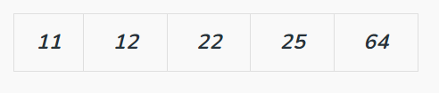

Selection sort is a simple and efficient sorting algorithm that works by repeatedly selecting the smallest (or largest) element from the unsorted portion of the list and moving it to the sorted portion of the list. The algorithm repeatedly selects the smallest (or largest) element from the unsorted portion of the list and swaps it with the first element of the unsorted portion
complexity analysis of Bubble sort
-
Time Complexity:
The time complexity of Selection Sort is O(N2) as there are two nested loops:
- One loop to select an element of Array one by one = O(N)
- Another loop to compare that element with every other Array element = O(N)
- Space complexity: O(1) as the only extra memory used is for temporary variables while swapping two values in Array. The selection sort never makes more than O(N) swaps and can be useful when the memory write is a costly operation.
Illustration of Bubble sort:
The algorithm maintains two subarrays in a given array.
- The subarray which already sorted.
- The remaining subarray was unsorted.
After every iteration sorted subarray size increase by one and the unsorted subarray size decrease by one.
Lets consider the following array as an example: arr[] = {64, 25, 12, 22, 11}
-
First Pass:
- For the first position in the sorted array, the whole array is traversed from index 0 to 4 sequentially. The first position where 64 is stored presently, after traversing whole array it is clear that 11 is the lowest value.
- Thus, replace 64 with 11. After one iteration 11, which happens to be the least value in the array, tends to appear in the first position of the sorted list.
-
Second Pass :
- For the second position, where 25 is present, again traverse the rest of the array in a sequential manner.
- After traversing, we found that 12 is the second lowest value in the array and it should appear at the second place in the array, thus swap these values.
-
Third Pass:
- Now, for third place, where 25 is present again traverse the rest of the array and find the third least value present in the array.
- While traversing, 22 came out to be the third least value and it should appear at the third place in the array, thus swap 22 with element present at third position.
-
Fourth Pass:
- Similarly, for fourth position traverse the rest of the array and find the fourth least element in the array.
- As 25 is the 4th lowest value hence, it will place at the fourth position.
-
Fifth Pass:
- At last the largest value present in the array automatically get placed at the last position in the array.
- The resulted array is the sorted array.

>>Try Visualization By Yourself